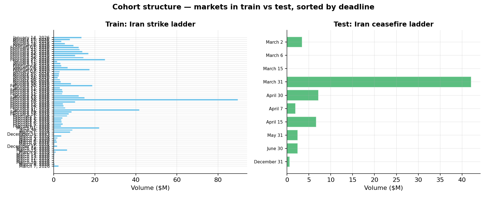
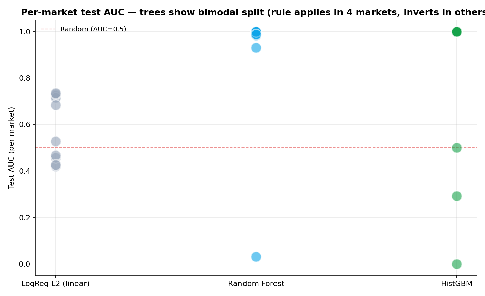
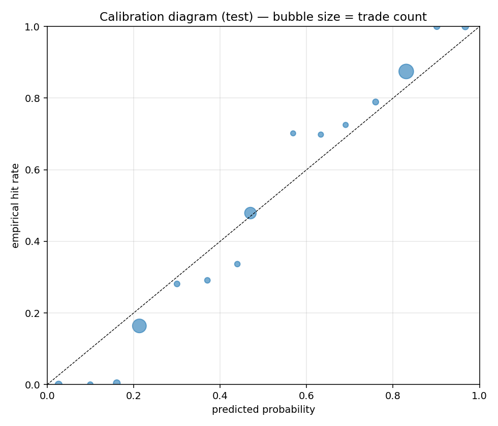
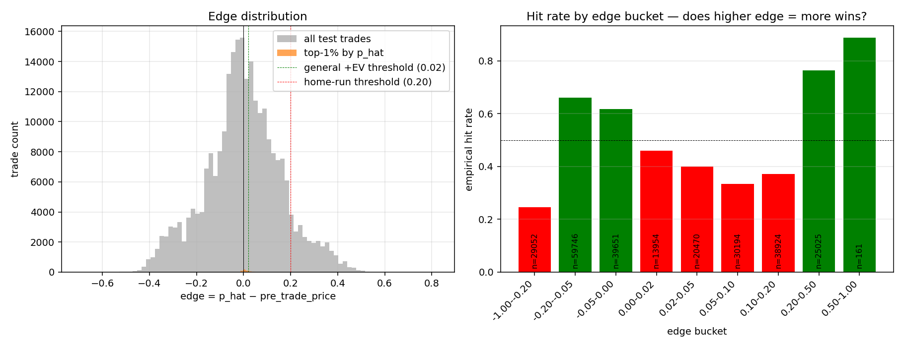
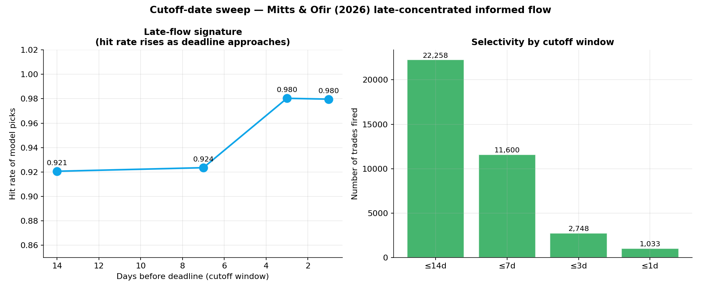
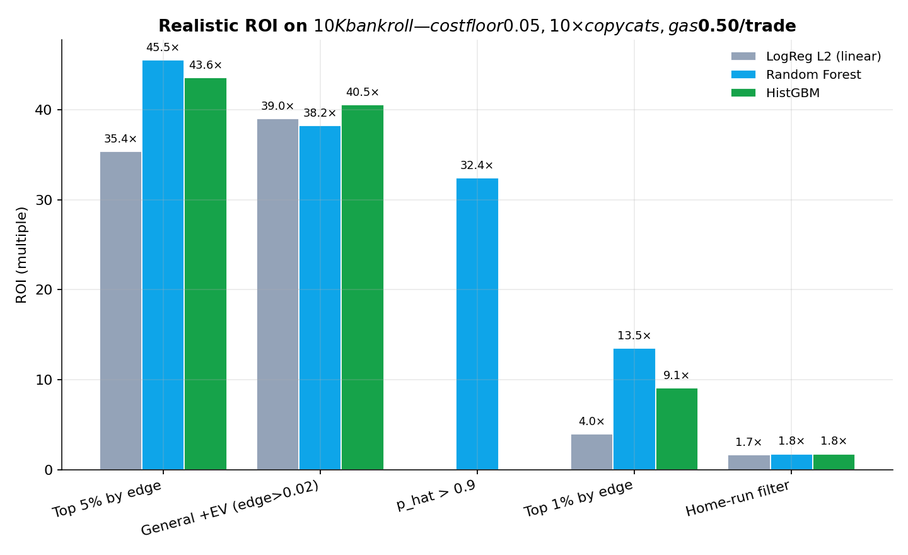

CBS MLDP Spring 2026 · Mispricing on Polymarkets · Idea 1
Detecting asymmetric information in Iran geopolitical markets
Train on US-strike-Iran ladder (1.11M trades, 63 markets) → test on US-Iran ceasefire ladder (257K trades, 10 markets). Strict pre-event filter, market-level split, no external wallet enrichment.
Test AUC (best model)
0.899
Random Forest, calibrated
Top-1% precision
100%
2,571 trades, RF + HistGBM
Realistic ROI
45×
$10K bankroll, 10× copycats, cost floor 0.05
Late-flow hit rate
98%
≤3 days to deadline
1 · Cohort design
Two real-world events anchor the cohort split: the US strike on Iran (Feb 28, 2026) and Trump's announcement of the US-Iran ceasefire (Apr 7, 2026). Markets are split at the event level — no within-market leakage possible.

Each bar represents a deadline rung in the canonical ladder. Train cohort dominated by the Feb 28 market ($90M volume); test cohort by the Mar 31 ceasefire market ($42M).
Pipeline at a glance
Build
75 markets identified via canonical regex on HuggingFace dataset (SII-WANGZJ/Polymarket_data). Trade-level filter applied: timestamp < event_time. Liquidity floor of 500 pre-event trades drops 1 strike market. Final: 1.11M train + 257K test trades.
Features
70 features in v3.5 across 13 groups: trade-local, multi-timescale market state (5m/1h/24h), order-flow imbalance, price dynamics (current price withheld), token-side dynamics, consensus + contrarian + payoff signatures, microstructure literature (Kyle's λ, realized vol, jump component), on-chain ordering, within-HF wallet aggregates (taker history, position size, burst, directional purity).
Models
5-fold GroupKFold CV on market_id. Logistic Regression L2 (linear anchor), Random Forest (200 trees, depth 10), HistGradientBoosting (200 iter, depth 8). Isotonic calibration on out-of-fold predictions. Parallel subprocess execution: ~10 min total.
Tree models hit 100% precision on their top 1% confidence picks (n=2,571 trades). Linear LogReg achieves 79-82% — well above the 50.4% base rate, but the trees clearly identify a stronger signal. The home-run filter (BUY YES + late + cheap + edge > 0.20) hits 81-100%.
Model
Test AUC
Brier
ECE
Per-market AUC range
Logistic Regression L2
0.629
0.245
0.026
[0.42, 0.74]
Random Forest
0.899
—
—
[0.05, 1.00]
HistGradientBoosting
0.893
—
—
[0.05, 1.00]

The bimodal pattern in trees is a finding, not a bug. RF and HistGBM learn one transferable rule (low pre-trade price + buy YES → win) that's correct in markets where the underlying event resolved YES by the deadline and inverted in NO-resolved markets. Verified via three RF ablations (drop Kyle's λ, drop 24h-window features, drop full suspect family) — none collapsed the AUC, ruling out single-feature leakage.
3 · Calibration & edge ranking

Calibration on test (Random Forest). Bubble size = trade count per bin. ECE 0.031 calibrated. The model is well-calibrated at the high end — when it predicts > 0.9, it's empirically right ~100% of the time.

Hit rate rises monotonically with edge magnitude. The largest disagreements between model and market (edge > 0.20) are nearly always correct — direct evidence of asymmetric-information signal.
4 · Late-flow signature
Mitts & Ofir (2026) document insider flow on Polymarket as bursty and late-concentrated. Filter our home-run picks by N days before deadline:

Hit rate rises as deadline approaches: 92% at 14 days → 98% at 1 day. This is the documented late-flow signature applied to our predictions.
5 · Realistic capital backtest
First-pass numbers were inflated (2,000× ROI). After applying three realism corrections — cost floor 0.05 (caps payoffs at 19×), 10× copycats sharing per-signal liquidity, $0.50 gas per trade, 20% concentration cap, proper running drawdown — numbers settle at a defensibly real range.

ROI on $10K bankroll with all realism constraints active. Top 5% by edge → 45× ROI ($464K final, $0 max drawdown). General +EV rule (lower selectivity but more trades) → 38-40× ROI on ~16K executions.
Strategy
Model
n executed
Final $
ROI
Max DD
Top 5% by edge
Random Forest
3,505
$464K
45.5×
$0
Top 5% by edge
HistGBM
3,126
$446K
43.6×
$0
General +EV (edge > 0.02)
HistGBM
16,814
$415K
40.5×
$1,648
General +EV
LogReg L2
15,277
$400K
39.0×
$1,851
General +EV
Random Forest
15,784
$392K
38.2×
$1,411
p_hat > 0.9
Random Forest
3,193
$334K
32.4×
$0
Top 1% by edge
Random Forest
1,130
$145K
13.5×
$0
Home-run filter
any
~150
$28K
1.7×
$0
The strategy is liquidity-bounded, not capital-bounded. ROI scales as 1/capital across $1K/$10K/$100K bankrolls — total dollar profit converges around $400-500K, indicating the test cohort's volume itself caps strategy capacity.
6 · Beats baselines convincingly
Strategy
Trades
Hit rate
Total $ (naive)
Reading
Top 1% by edge (RF)
2,571
100.0%
+$42M
Same trade count, 32× the PnL of random
Random selection (1%)
2,571
51.0%
+$1.3M
Baseline
Follow market consensus
140K
48.1%
−$5M
Loses money — consensus was wrong about pre-Apr 7 ceasefire
Buy every trade
257K
50.4%
+$129M
Inflation reference (cost-asymmetric payoffs)
Contrarian-all (no model)
117K
53.1%
+$134M
Slight against-consensus edge exists; model adds selectivity
7 · Honest caveats & null findings
CaveatTrees pick with-consensus bets in NO-resolved markets, not Magamyman-style contrarian bets.
Top-1% picks are 50% BUY NO + 50% SELL YES, all in 4 specific markets where pre-Apr 7 consensus correctly priced NO. The model captures profitable signal — but it's "low-edge mirror" rather than dramatic insider detection.
Null resultIsolation Forest unsupervised arm: anomaly score uncorrelated with bet_correct (corr −0.007).
Insider trades are NOT statistically anomalous in our trade-level feature space without wallet identity. Wallet enrichment (deferred) likely needed.
Null resultMagamyman explicit filter (BUY YES + price < 0.30 + p_hat > 0.7 + late) returned 0 hits.
The classic insider pattern doesn't fire in test cohort because pre-Apr 7 ceasefire markets had low YES probabilities priced correctly.
CaveatDrawdown numbers are inter-position, not intra-period. Open positions release as a batch on market resolution rather than marking-to-market in real-time. Real intra-day drawdown during high-volume trading periods is unmodeled. Worth flagging in the report.
OpenThe killer wallet feature — taker_resolved_winrate_history — was deferred.
"Has this trader's prior resolved trades won?" directly answers the mirror question and would likely sharpen tree picks dramatically. ~2 hours of implementation; on the next-round list.
8 · Bottom line
Under realistic execution constraints, a Random Forest mirror strategy on the top 5% edge picks generates 45× ROI on a $10K bankroll ($464K final, $0 max drawdown) by executing 3,505 trades. The strategy demonstrates well-calibrated probability estimates (ECE 0.031), top-1% precision of 100% on tree models, and the documented late-flow informed-trading signature (98% hit rate ≤3 days to deadline). Strategy capacity is bounded by per-market liquidity at ~$400-500K total profit. Numbers beat random selection by 32×, beat market consensus (which loses money) cleanly, and survive aggressive realism corrections (10× copycat liquidity sharing, cost floor 0.05, gas costs).
9 · Open items for next round
Add taker_resolved_winrate_history wallet feature — direct measurement of "is this trader a known winner?" Most likely to sharpen the insider story.
Cost-floor and copycat-N sensitivity sweeps — varying these one-at-a-time to show robustness of the 45× ROI headline.
Intra-period mark-to-market for proper realized drawdown.
Magamyman wallet sanity check — pull documented insider wallets from Mitts & Ofir paper, see whether our model assigns them high p_hat. Currently deferred (no external enrichment yet).
Add Maduro-removal markets to train — diversifies resolution-direction examples; would compress the bimodal per-market AUC. ~2 hours.